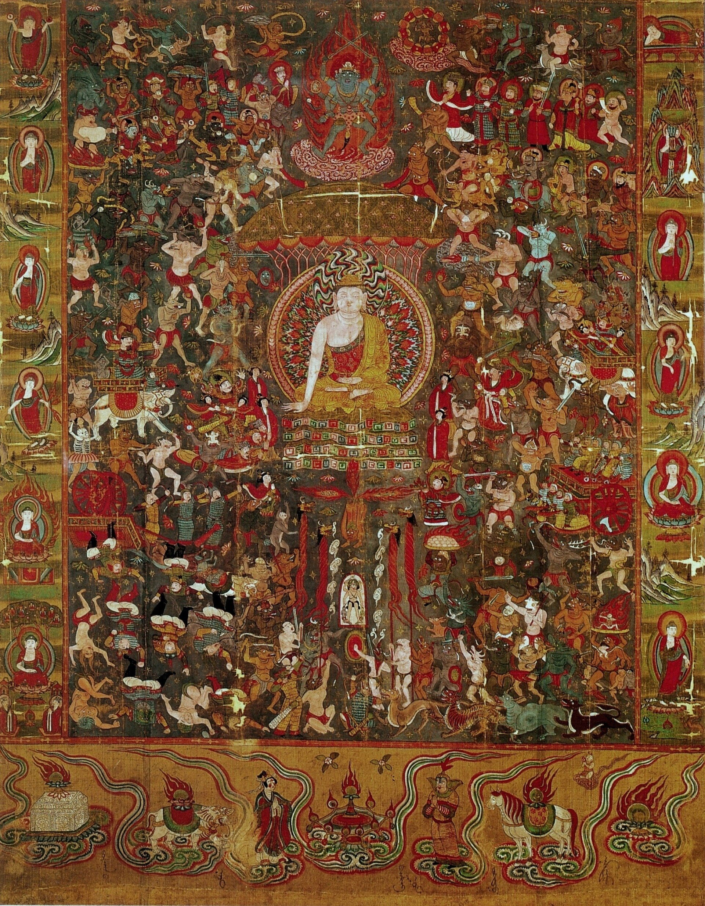

第 24 章
像素里的重聚
纵览二十世纪中国西北的文物调查史，1962年《文物》期刊上那篇题为《新疆天山以南的石窟》的报告，不过是学术档案中一个不起眼的节点。这份由西北文化局新疆文物调查工作组——成员包括阎文儒、常书鸿——完成的成果，记录的是五十年代对柏孜克里克千佛洞等新疆境内遗存的复查。更早的一次系统性测绘来自1961年，由北京大学、敦煌文物研究所、中国佛学院等单位组成的新疆石窟调查组，他们对柏孜克里克千佛洞各洞窟进行了测绘与编号，确认了五十七个有编号的洞窟。
在德国人勒柯克离开近半个世纪后，中国人第一次系统地回到那些被切割过的洞窟前。报告里有一组数字：柏孜克里克现存洞窟编号八十三座，其中保存壁画者不足半数，壁画总面积超过一千二百平方米。那些被逐一测量的壁面残留，面积最大的也不过十几平方米。在“保存状况”一栏里，反复出现一个词：“残损”。
那份报告里的“残损”二字，不是描述，是判决。它宣告了某种完整性的终结——壁面被切割，佛像被凿去，彩绘被剥离，剩下的只是残片和空洞。但这份判决书里也藏着一种期待：残损意味着曾经完整，标注意味着记得失去。
1962年的调查员们用铅笔在登记表上写下这两个字时，他们实际上完成了一次最早的“数字重聚”——在纸面上，在分类系统里，在学术档案中，把那些已经分离的部分重新放回它们原本的位置。柏孜克里克的石窟编号系统本身便是一部浓缩的剥离史：德国考察队的格伦威德尔编号（四十窟）、斯坦因的十四窟编号、黄文弼在《吐鲁番考古记》中的十八窟编号、直至1961年调查组的五十七窟编号与1981年文管所的八十三窟编号。每一次编号，都是对残存现场的一次测绘与定义。
只不过那时的“数字”，是编号，是尺寸，是保存状况的简要记录。那不是像素，不是三维坐标，不是点云数据。但那也是数字。是另一种数字。
五十多年后，当敦煌研究院的工程师们在莫高窟第45窟架设激光扫描仪时，他们面对的是一面完整的唐代壁画。完整，但正在消失。颜料层以每年微米级的速度剥落，烟熏的痕迹从宋代香客的供奉开始积累，游客呼出的二氧化碳在壁画表面形成看不见的腐蚀层。数字化首先不是为了让远在柏林的壁画残片与洞窟重聚，而是为了在物质性彻底湮灭之前，把影像留住。这是一种与时间赛跑的记录。
扫描仪的红外线在壁面上缓慢移动，每一个光点都是一个坐标，每一次反射都是一次采样。点云密度达到每平方厘米数千个点，精度足以捕捉颜料层的厚度变化。工程师穿着防尘服，戴着口罩和手套，设备的三脚架底部垫着减震海绵——不是为了保护设备，是为了保护地面。在莫高窟，人的存在本身就是污染源。每一次呼吸，每一次脚步，每一次体温变化，都在加速那些一千三百年前的颜料走向衰亡。同样面临衰亡的，还有数千里外柏孜克里克千佛洞那超过四十余处留存、总面积逾一千二百平方米的壁画。
但记录从来不是中性的。扫描仪的参数设置——分辨率、采样密度、色彩校准方式——每一个选择都在决定什么被记录，什么被忽略。工程师调整白平衡时，他实际上在定义“真实”的壁画颜色。
但什么是真实？是唐代画师在油灯下看到的颜色？是二十世纪初伯希和拍摄黑白照片时的灰阶？还是今天游客在LED冷光灯下看到的色调？没有一种“真实”是绝对的。数字化只是选择了其中一种，并将其固定为数据。
这个选择权，在工程师手里。他参考了敦煌研究院几代学者积累的色彩档案，参考了同时期唐代墓葬壁画保存较好的颜料样本，参考了实验室里对敦煌颜料化学成分的分析数据。他做了所有能做的校准。但最终，屏幕上显示的那个图像，仍然是一个解释——一个基于当前技术和学术共识的解释。解释的历史性无处不在，正如1984年，当清理人员从柏孜克里克第80窟废墟中发现《杨公重修寺院碑》时，碑文所记载的唐代贞元年间（786-790年）大兴土木的往事，为理解石窟的某个历史剖面提供了一个截然不同的、属于其原境的文本注脚。
这种解释权的行使，在数字敦煌项目的早期阶段几乎是隐形的。2000年代初，当敦煌研究院开始与外国机构合作进行数字化时，争议的焦点是设备、资金和人员培训。美国梅隆基金会资助了早期的拍摄项目，带来了当时最先进的数码后背和色彩管理系统。合作的条件看似简单：梅隆基金会提供设备和部分资金，敦煌研究院提供访问权限和学术支持，双方共享成果。但“共享”是一个模糊的词。谁拥有原始数据？谁有权决定数据的发布格式？谁控制数据的访问权限？这些问题在合作协议的初稿里没有被明确回答。不是因为疏忽，而是因为当时没有人预见到这些数据将来会变得多么重要。

到2010年代，情况发生了变化。数字敦煌平台上线，高精度图像开始在互联网上公开。
但公开不等于开放。平台上的图像分辨率被控制在“适合屏幕观看”的水平——足够清晰，但不足以用于印刷出版或商业用途。想要更高分辨率的图像？需要申请，需要说明用途，需要等待审批。审批的标准是什么？敦煌研究院没有公开过详细的审核流程，但大致的原则是清晰的：学术研究优先，商业用途严格控制，外国机构的申请需要更长的审核周期。
这不是一个独特的现象。大英博物馆、卢浮宫、大都会艺术博物馆——世界上几乎所有拥有重要收藏的机构，都在做同样的事情。数字化带来了“可见性”的民主化，任何能上网的人都可以看到以前只有少数专家才能接触的文物。但这种民主化是有边界的。边界就划在“看”和“用”之间。你可以看，但你不能随意使用。使用需要许可。许可由谁决定？由数据的持有者。
这创造了一种新的权力不对称。在物理世界里，如果你去敦煌莫高窟参观，你可以在洞窟里看壁画（在讲解员的手电筒光线下，在规定的时间内，在规定的距离外），但你不能拍照。这是物理空间的规则。在数字世界里，你可以在任何时间、任何地点打开数字敦煌的网页，放大、旋转、截图。这是数字空间的便利。但如果你想用这些图像做点什么——做研究、做展览、做文创产品——你就进入了许可的领域。而许可的规则，是由数据持有者单方面制定的。
敦煌研究院的数据使用协议里，有一行小字：商业用途需另行授权。什么叫商业用途？学术出版物算不算商业用途？如果一本学术专著定价八十元，印量两千册，这是商业还是学术？如果是自媒体账号在文章里使用了数字敦煌的图像，文章本身不收费，但账号有广告收入，这算不算商业用途？这些灰色地带，协议的文本没有穷尽，也不可能穷尽。解释权在数据持有者手里。
这不是在批评敦煌研究院。恰恰相反，敦煌研究院在数据开放方面已经做得比大多数中国文博机构更好。数字敦煌平台的存在本身，就是一种开放姿态。
问题不在于某个具体机构的政策，而在于数字化本身创造的结构。当一件文物被转化为数据，它就同时存在于两个领域：物理领域和数字领域。在物理领域，它的归属权是清晰的——敦煌壁画属于中国，保存在莫高窟，由敦煌研究院管理。在数字领域，它的数据归属权也是清晰的——数字敦煌平台上的图像版权属于敦煌研究院。但数字领域的清晰，掩盖了一个更深层的问题：数据不只是图像，数据是图像加上元数据，加上分类系统，加上检索关键词，加上与其他数据的关联方式。
这些“加上”的部分，每一个都是解释。当敦煌研究院决定如何描述一幅壁画——它的年代、风格、题材、颜料成分、保存状况——它就在行使解释权。当它决定哪些图像优先数字化，哪些图像以更高分辨率呈现，哪些图像配以更详细的说明文字，它也在行使解释权。这些解释权，在物理世界里是通过学术出版物、展览图录、导览讲解来行使的。在数字世界里，它们被编码进数据库的结构里，变得更隐蔽，也因此更难以质疑。
2016年，Google Arts & Culture与全球多家博物馆合作，推出了超高精度艺术图像在线浏览服务。其中包括一些收藏中国佛教文物的博物馆——纽约大都会艺术博物馆、伦敦大英博物馆、巴黎吉美博物馆。这些图像的精度惊人，达到十亿像素级别，用户可以在屏幕上看到笔触的纹理、颜料的裂纹、画布或墙面的肌理。这是一种前所未有的观看体验。
但仔细阅读Google Arts & Culture的使用条款，会发现一个有趣的细节：Google不主张对这些图像拥有版权——版权属于提供图像的博物馆——但Google保留对平台生成的衍生数据（如用户的浏览记录、放大区域的热力图、停留时长统计）的所有权和使用权。这意味着什么？意味着当你在线观看一幅来自吉美博物馆的敦煌绢画时，你不仅在看画，你也在被看。你的观看行为被转化为数据，这些数据被Google收集、分析、用于优化算法或商业目的。你看画的行为，成了产品的一部分。
这创造了一种新的解释权维度。在传统的博物馆里，策展人通过展品选择、陈列顺序、展签文字来引导观众的观看和解释。但策展人无法精确知道每一位观众在每一件展品前停留了多久，先看什么后看什么，在哪一部分加快了脚步，在哪一部分驻足良久。这些信息只能通过抽样观察或观众调查获得，粗糙且不完整。
在数字平台上，这一切都被精确记录。平台知道你在哪幅画的哪个局部放大了多久，知道你从哪个页面跳转到哪个页面，知道你在什么时间、什么地点、用什么设备登录。这些数据汇总起来，构成了观众行为的全景图。这幅全景图可以用来做什么？可以用来优化用户界面，让浏览更流畅。也可以用来分析观众的兴趣分布，决定哪些藏品应该被更突出地展示。还可以用来训练推荐算法，影响后来的观众看到什么、以什么顺序看。
推荐算法不是中性的。它倾向于推荐已经被大量观看的内容，形成马太效应——热门的更热门，冷门的更冷门。
如果一幅来自敦煌的唐代菩萨像因为某种原因（图像特别精美、在首页被推荐、被社交媒体转发）获得了大量点击，算法就会把它推送给更多用户。而同一洞窟里另一幅同样重要但图像不那么“上镜”的供养人像，可能就被埋没在数据库深处。算法的推荐，正在成为新的策展人。但这个策展人没有学术背景，不懂艺术史，不考虑学术价值。它只考虑一个指标：用户参与度。
这不是阴谋论。这是平台经济的运行逻辑。Google Arts & Culture不是公益项目，它是Google品牌战略的一部分，是“不作恶”时代遗留下来的文化外衣。它不向用户收费，不向合作博物馆收费（至少不是主要收入来源），但它从用户行为数据中获得的价值，远远超过它投入的技术成本。每一幅十亿像素图像背后的服务器运算、存储空间、带宽消耗，都由数据收集和分析的商业价值来覆盖。
用户以为自己是在免费欣赏艺术，实际上是在用注意力为Google的数据库打工。这种模式，被学者称为“监控资本主义”在文化领域的延伸。它不直接控制解释的内容，但它控制了解释的可见性分布。它不决定哪幅画重要，但它决定哪幅画被更多人看到。在注意力经济的时代，被看到就是权力。
回到敦煌。敦煌研究院没有选择与Google Arts & Culture合作。数字敦煌平台是独立建设的，服务器在中国境内，数据标准由敦煌研究院制定，访问权限由敦煌研究院控制。这是一个有意识的选择。
选择独立，意味着更高的成本——服务器、带宽、软件开发、维护更新，每一项都需要持续投入。但独立也意味着自主。敦煌研究院不需要与Google分享用户行为数据，不需要遵守Google的数据标准，不需要担心平台算法对敦煌文物呈现方式的扭曲。这种自主，是用真金白银换来的。数字敦煌项目每年的运营成本，有相当一部分来自国家文物局的专项拨款和甘肃省的财政支持。换句话说，中国纳税人出钱，维持了这个数字平台的独立性。这种模式有它的优势——解释权牢牢掌握在敦煌研究院手里，不受商业平台逻辑的侵蚀。
但也有它的局限——预算有限，技术更新速度不如商业平台，国际影响力受限于语言和推广渠道。数字敦煌的界面有英文版，但元数据的翻译质量参差不齐，很多洞窟的说明文字只有中文。
一个不懂中文的外国研究者，在数字敦煌上能获取的信息，远不如在Google Arts & Culture上获取的吉美博物馆藏品信息丰富。这不是技术问题，是资源分配问题。翻译需要钱，维护多语言界面需要钱，国际推广需要钱。在有限的预算里，这些需求排在数字化采集和存储之后。
这又把我们带回了那个核心问题：解释权的分配，最终受制于资源的不对称。敦煌研究院有钱做数字化，但没那么多钱做国际传播。大英博物馆有钱做国际传播，但它的数字化重点不在中国文物——斯坦因藏品中大量的敦煌绢画和写本，只有一小部分被高精度数字化并上线。
为什么？因为大英博物馆要优先数字化观众最感兴趣的藏品——罗塞塔石碑、帕特农神庙浮雕、埃及木乃伊。敦煌文物在国际观众中的知名度，远不如这些“明星藏品”。数字化资源的分配，反映的是机构对观众需求的判断，而观众需求又受到既有文化话语权的影响。这是一个循环：西方观众对敦煌不了解，所以博物馆不优先数字化敦煌藏品；敦煌藏品不被数字化，西方观众就更没有机会了解敦煌。打破这个循环，需要的不仅是技术，更是文化传播的政治意愿和资源投入。
中国在这方面有过尝试。2017年，敦煌研究院与法国吉美博物馆签署合作协议，共同研究吉美博物馆收藏的敦煌绢画和雕塑。协议的核心内容之一，是双方共享数字化数据，并在各自平台上以统一标准呈现。这听起来是一个理想的合作模式：中国的学术资源加上法国的藏品资源，共同构建一个虚拟的敦煌完整图像。但协议的执行并不顺利。
问题出在“统一标准”上。吉美博物馆有自己的藏品管理系统和数据标准，敦煌研究院有另一套。两套系统在分类法、描述术语、元数据格式上都有差异。谁来迁就谁？如果双方各用各的标准，数据就无法互通，虚拟重聚就是一句空话。如果要统一，以谁的标准为准？这个问题在技术层面可以协商解决——制定一个中间格式，双方各自转换数据。
但转换意味着信息的损失。吉美博物馆的藏品描述里，有些术语在中国学术体系里没有对应概念。敦煌研究院的分类框架里，有些维度在法国同行的系统里不被重视。每一次转换，都是一次解释权的重新分配。谁来决定哪些信息保留，哪些信息可以舍弃？
这个问题，协议文本里没有明确回答。它被留给了“后续技术协商”。但“后续技术协商”本身就是权力运作的空间。谁的谈判地位更强，谁的技术团队更有经验，谁对最终结果的影响力就更大。
这不是一个中法之间的特殊问题。全球范围内，涉及流散文物的数字化合作项目，几乎都面临同样的困境。2018年，欧盟资助了一个名为“丝绸之路数字档案”的项目，试图整合欧洲多家博物馆收藏的丝绸之路文物数据。项目参与方包括大英博物馆、柏林亚洲艺术博物馆、巴黎吉美博物馆、圣彼得堡艾尔米塔什博物馆等。项目的初衷是打破机构壁垒，让研究者可以在一个平台上跨馆检索。
但项目刚启动就遇到了元数据标准不统一的问题。每一家博物馆都坚持用自己的分类系统，因为那是几十年甚至上百年积累的学术传统，改动的成本太高。最终，项目采取了一个折中方案：各馆按自己的标准提供数据，项目平台做一个顶层的检索接口，用关键词匹配来关联不同来源的数据。这个方案在技术上可行，但检索效果大打折扣。
如果你在平台上搜索“敦煌”，返回的结果可能包括大英博物馆用“Dunhuang”标注的藏品，也包括柏林亚洲艺术博物馆用“Turfan”（吐鲁番）标注但实际上来自敦煌的藏品，还包括吉美博物馆用法语“Touen-houang”标注的藏品。这三种标注指向同一个地理概念，但在数据库里是三个不同的检索词。除非你知道所有可能的拼写和翻译，否则你注定会漏掉一些东西。分类系统的不统一，造成了知识的不完整呈现。而分类系统背后，是不同学术传统对同一批文物的不同理解。统一分类系统，意味着统一理解。这可能吗？谁的理解应该成为标准？
这些问题，在物理返还的讨论中很少被提及。物理返还的争论焦点是所有权——这东西是谁的，应该还给谁。数字重聚把焦点转移到了使用权和解释权——数据谁可以用，怎么用，以什么框架呈现。所有权的逻辑是二元的：要么是你的，要么是我的。使用权的逻辑是光谱式的：可以开放，可以限制，可以部分开放部分限制，可以开放给学术研究但限制商业使用，可以开放低分辨率但保留高分辨率。
每一个选择都是一个权力节点。在这些节点上，不同利益主体在博弈。博物馆想保留对数据的控制，研究者想要最大程度的开放，来源国想要在虚拟重聚中掌握叙事主导权，商业平台想要获取用户数据，观众想要免费、便捷、高质量的访问体验。这些诉求不完全兼容。数字重聚不是技术问题解决了就自动实现的美好愿景，它是这些诉求持续博弈的场域。
让我们回到那个乌鲁木齐研究员的计算机屏幕前。他在三维模型上标注的每一个注释，都在行使一种权力——命名的权力，归位的权力，在虚拟空间中重建秩序的权务。这种权力不依赖外交谈判，不依赖法律诉讼，不依赖国际舆论。它只依赖技术能力和数据积累的意志。从这个意义上说，数字重聚确实为解释权的回流提供了一条绕过物理僵局的路径。但这条路径上布满了新的关卡。
数据标准是谁制定的？平台是谁控制的？访问权限是谁设定的？元数据是用什么语言写的？检索算法是如何排序的？这些关卡，每一个都在筛选谁能看到什么，以什么顺序看到，看到什么程度的细节。它们不直接说“这是错的”，它们只是让某些东西更容易被看到，让另一些东西更难被找到。这种权力比直接的审查更隐蔽，也因此更有效。
2019年，敦煌研究院推出了数字敦煌的英文升级版。新版本增加了三十个洞窟的高精度全景漫游，图像分辨率提升了一倍，元数据翻译质量有了显著改善。
在其中一个洞窟的虚拟漫游页面上，有一处壁面被标注为“残损——部分藏于柏林亚洲艺术博物馆”。点击标注，弹出一个文本框，简要说明了那部分壁画的题材、尺寸、流失经过和柏林藏品的编号。没有图像——柏林方面没有授权使用。但文本本身已经足够。它告诉每一个进入这个虚拟洞窟的人：这里曾经有东西，它还在，在柏林，编号是MIK III 8371。这个信息，在物理洞窟里是看不到的。在物理洞窟里，你只能看到一片灰泥墙面，讲解员可能提一句，也可能不提。但在数字洞窟里，这个信息被永久嵌入了空间坐标。每一个访问者，不管他在北京、纽约还是开普敦，只要他打开这个页面，他就会知道。这就是解释权的行使。
它不改变物理归属，不改变法律状态，不改变柏林那件藏品的所有权。但它改变了观看的框架。在数字空间里，那件柏林藏品不再是独立存在的“艺术品”，它被重新定义为“缺失的部分”。它的意义，被它在洞窟中的缺席所定义。
这种重新定义，是数字重聚最深刻的潜力所在。物理返还的争论，往往把流散文物的意义固定在所有权上——谁拥有它，谁就有权解释它。数字重聚打破了这种固定。即使所有权不变，解释的框架也可以改变。一件在柏林被归类为“印度部藏品”的壁画残片，在数字敦煌的注释里被重新归类为“柏孜克里克第20窟主室北壁缺失部分”。这两个分类，哪一个更“真实”？
从物质属性上说，它确实在柏林，确实是印度艺术博物馆的藏品。从历史属性上说，它确实来自柏孜克里克，确实是那个洞窟的一部分。两种分类都是真实的，但它们是不同层面的真实。数字重聚的力量，在于它可以把后一种真实可视化，把它嵌入一个更完整的叙事框架中。在这个框架里，柏林的藏品不再是孤立的审美对象，而是被切割的整体中的一块碎片。它的美仍然存在，但它的残缺也被揭示。这种揭示，不需要柏林的同意。
但揭示不等于解决。数字重聚可以改变叙事的框架，但改变不了物质性缺席的事实。在那个乌鲁木齐研究员的屏幕上，注释只是一个红点。点击红点，弹出的文本框里有文字描述，有柏林藏品的编号，有流失经过的简要说明。但没有图像，没有材质，没有颜料层的厚度数据，没有壁画表面的龟裂纹理。这些物质性的细节，只有在面对实物时才能获得。数字模型可以提供精确的空间坐标，可以模拟光照条件，可以还原色彩（在技术允许的范围内）。但它无法传递物质的重量、温度、气味，无法传递一千三百年来颜料层自然老化的质感，无法传递当年勒柯克使用狐尾锯切割壁面时留下的锯痕边缘的触感。
这是一种替代性的重聚。不是把柏林的数字模型拿过来拼在一起——他没有那个权限。而是在自己的数据中标明缺失部分的下落，为将来的重聚预留接口。这个注释是一个占位符，一个沉默的提醒：这里曾经有东西，它还在，只是不在这里。
他保存了文件。计算机的风扇转动了几秒钟，然后安静下来。屏幕上，那个洞窟模型继续旋转，空白处被注释标记覆盖。窗外的乌鲁木齐正在进入黄昏。这座城市距离柏林五千多公里，距离敦煌八百公里。在数字空间中，这些距离都不存在。
但距离不是唯一的问题。注释是一种最低限度的重聚。它不试图填补空白，不制造虚假的整体性。它只是记录——记录缺失，记录去向，记录那些仍然分离的部分。这种记录本身，就是一种解释权的行使：它用自己的分类框架重新描述了那些流散在外的文物，把它们从“印度部”的编号系统中拉回来，放回洞窟壁面的具体位置。这不需要柏林的同意，不需要外交谈判，不需要修改国际公约。它只需要一个数据库，一个平台，和一种坚持记录的意志。
这种坚持，与1962年那份调查报告中的“残损”标注，是同一种姿态。五十多年过去了，工具变了——从铅笔和测量尺变成了激光扫描仪和三维软件——但核心的动作没有变：记录，标注，存档。在等待那些壁画回来的漫长岁月里，先把它们的位置留好。
数字时代的注释，比纸本时代的注释多了一种可能性。纸本报告里的“残损”是静态的，它只是说明缺失。数字模型里的注释可以被链接——如果将来有一天，柏林方面同意共享数据，那个注释就可以变成一个超链接，点击之后弹出柏林藏品的高精度图像，与洞窟内的残留边缘精确对齐。注释是接口，是预留的插槽，是为将来的重聚做的准备。
但这个“将来”什么时候到来，不取决于技术。它取决于那些看不见的边界何时松动。在边界松动之前，注释就只是注释——一个沉默的标记，在服务器的硬盘里等待。那个乌鲁木齐的研究员关掉了计算机。屏幕上最后闪过的，是那个洞窟模型的缩略图——灰色的三维网格上，一个红色的小点标记着注释的位置。那个红点很小，在缩略图里几乎看不见。但它在那里。